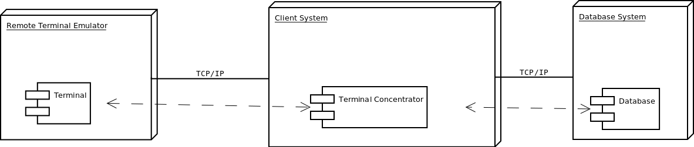

Database Test 2 (DBT-2) Documentation
Open Source Development Labs, Inc. 12725 SW Millikan Way, Suite 400 Beaverton, OR 97005 Phone: (503) 626-2455 Fax: (503) 626-2436 Email: info@osdl.org
Copyright (c) 2002 by The Open Source Development Laboratory, Inc. This material may be distributed only subject to the terms and conditions set forth in the Open Publication License, v1.0 or later (the latest version is currently available at http://www.opencontent.org/openpub/). Distribution of substantively modified versions of this document is prohibited without the explicit permission of the copyright holder.
Other company, product or service names may be trademarks or service marks of others.
Introduction
The OSDL Database Test 2 (DBT-2) workload test kit provides an on-line transaction processing (OLTP) workload using an open source database and a set of defined transactions. This document gives an overview of the DBT-2 test kit.
The DBT-2 test kit is a derivative of a benchmark specification released by the Transaction Processing Performance Council (TPC). The TPC Benchmark(TM) C (TPC-C) is briefly described before the DBT-2 test kit is discussed.
Differences from the TPC-C
Introduction
The purpose of this document is to list the places where the OSDL Database Test 2 (DBT-2) test kit deviates from the TPC-C Standard Specification Revision 5.0 (http://www.tpc.org/tpcc/). DBT-2 may use terminology similar to benchmarks from the TPC or other, but such similarity does not in any way imply any comparable relationship with any other benchmark.
Database Design
All required fields are not returned to the terminal.
The kit currently does not use foreign keys to enforce any integrity constraints. (Clause 1.3)
Storage space for a 60-day period is not determined. (Clause 4.2.3)
Database Scaling
By default the data generator for the database scales the database properly based on the number of warehouses built. The scale for all the tables, except DISTRICT and ORDER_LINE, can be manually overridden. (Clause 1.4.3)
Transactions
Payment
In the case where the selected customer has bad credit, the original c_data is not appended to the new c_data updated for the customer. (Clause 2.5.2.2) [SAP DB]
Delivery
Delivery transactions are not queued and deferred, but are executed immediately. (Clause 2.7.2.1)
Statistics are not collected for the case when deliveries are not made for a district. (Clause 2.7.2.3)
Acid Properties
Test have not been designed to test the ACID properties of the database. (Clause 3)
Performance Metrics
The reported throughput does not have a minimum required throughput. (Clause 4.1.3)
DBT-2 does not require reporting (Clause 5.6) nor does it require a full disclosure report be published (Clause 8). An independent audit is also not required. (Clause 9)
The pricing of the system under test is not calculated. (Clause 7)
Driver
The driver is currently designed to work with a client program to reduce the number of connections to the database. The driver can be used in a way such that it implements most of the client code directly to reduce the number of connections to the database from the driver program directly, instead of opening a database connection per terminal emulated. (Clause 6.1)
The mix of the transactions conforms to the TPC-C specification by default, but it can be adjusted outside the restrictions placed in the specification. (Clause 5.2.3)
The Keying Time and Thinking Time is constant but can be user defined. (Clause 5.2.5.7)
A maximum 90th percentile response time is not required. (Clause 5.2.5.3)
Architecture
This section briefly recaps the TPC-C, and then describes how DBT-2 implements the TPC-C specification.
TPC-C
The TPC-C represents the database activities of any industry that manages, sells, and distributes a product or service, such as car rental agencies, food distribution companies, and parts suppliers. The simulated business model mimics a wholesale parts supplier that operates out of a number of warehouses and their associated sales districts. Each warehouse has ten sales districts and each district servers three thousand customers. A user from a sales district can select at any time one of five operations from the order entry system: entering new orders, delivering orders, tracking payment for orders, checking the status of the orders, or monitoring the level of stock at a specified warehouse.
The most frequent transaction consists of entering a new order that is comprised of an average of ten line items. Each warehouse maintains stock for 100,000 items and attempts to fill orders from that stock. To simulate realistic events, such as the case where a particular warehouse may not have the item in stock, the TPC-C benchmark requires that close to 10% of all orders must be supplied by another warehouse (i.e. 10% of all orders are not in stock at the warehouse where the order is entered).
Another heavily weighted transaction is the recording of payments from customers. Delivering orders, stock level checks, and inquiring about the status of certain orders are less frequently executed transactions.
The level of throughput is a result of the activity of the users executing database transactions. For each warehouse, ten terminals are simulated to access the database. The final throughput of the benchmark is directly related to the number of warehouses the database is scaled to. A remote terminal emulator (RTE) is used to maintain the required mix of transactions over run duration of the workload. The mix represents the complete business processing of an order as it is entered, paid for, checked , and delivered. The primary metric of a TPC-C benchmark is the number of New-Order transactions executed per minute, designated as tpmC.
TPC-C consists of five transactions of varying complexity. These transactions exorcises a database's ability to maintain data integrity, accesses data of varying sizes, and handles contention on accesses and updates. The transactions are called New-Order, Payment, Order-Status, Delivery, and Stock-Level.
For more information on the TPC, see their web site at: http://www.tpc.org/. Further information on the TPC-C can be found on the web at: http://www.tpc.org/tpcc/.
DBT-2
DBT-2 is a derivative of the TPC-C designed to produce a real-world on-line OLTP workload, similar to the TPC-C, to stress the Linux operation system without the complexity and expense of running a TPC benchmark.
TPC benchmarks are intended as competitive marketing tools. The TPC requires all published results to comply with strict publication and auditing rules to ensure fair comparisons between competitors. The TPC also requires the general availability and disclosure of the pricing for all products used for the benchmark. It is impractical for open source development projects to adhere to these rules; thus, the results reported by the DBT-2 test kit do not constitute a TPC-C result, and are incomparable with any TPC-C benchmark.
The primary metric reported by the DBT-2 workload is the number of New-Order transactions executed per minute and is expressed as NOTPM (New Order Transactions per Minute). However, NOTPM's do not and should not be compared to tpmC measurements in any way since the DBT-2 workload does not constitute a compliant TPC-C benchmark.
Improper Comparisons
If you discover any usage of DBT-2 in drawing conclusions about TPC-C performance, this inappropriate usage should be reported to both the TPC and to the OSDL:
TPC - admin@tpc.org
OSDL - wookie@osdl.org
Design
This kit is composed of three main components, as illustrated in Figure 1: a database, remote terminal emulators, and clients. There can be multiple terminals that connect to multiple terminal concentrators, which connect to a single database. Each component is described in the following sub-sections.
Database
The database consists of nine tables with supportint five transactions. While this test kit is currently primarily maintained for PostgreSQL, it can be adapted to any other database. The data represents a company that is a wholesale supplier with a number of distributed sales districts and associated warehouses covering a wide geographic range. The database can be scaled to any number of warehouses to simulate businesses of varying sizes. By default, a warehouse covers 10 districts, each district serving 3,000 customers, with each warehouse maintaining stock for a complete inventory of 100,000 items. DBT-2 allows the rest of the database to be scaled as defined by the user. The five transactions supported are: New-Order, Payment, Order-Status, Delivery, and Stock-Level.
New-Order Transaction
The New-Order transaction is a mid-weight, read-write single database transaction designed to reflect on-line database activity typically found in production environments. The transaction performs seven to seventeen row selections, six to sixteen row selections with updates, and seven to seventeen row insertions, and is executed 45% of the time.
Payment Transaction
The Payment transaction is a light-weight, read-write database transaction that updates a customer's balance and reflects payment on a district's and warehouse's sales statistics. The transaction performs an average of two row selections, six row selections with updates, and two row insertions, and is executed 43% of the time.
Order-Status Transaction
The Order-Status transaction is a mid-weight read-only data transaction that queries the status of a customer's most recent order. The transaction performs two row selections and nine to nineteen row selections with updates, and is executed 4% of the time.
Delivery Transaction
The Delivery transaction is a database transaction that processes up to ten new orders. The transaction performs two row selections, six to sixteen row selections with updates, and one row deletion, and is executed 4% of the time.
Stock-Level Transaction
The Stock-Level transaction is a heavy read-only database transaction that determines the number of recently sold items that have a stock level below a specific threshold. The transaction performs up to 900 row selections and is executed 4% of the time.
Remote Terminal Emulators
A remote terminal emulator (RTE) simulates the activities of a person at a terminal console executing one of the five transactions supported by the database. The RTE is designed to either connect to a client system in order to access the database in a three-tier model. The RTE is also designed so that it can be controlled by an external process. The external process is a monitoring program that manages drivers across multiple systems.
The RTE is designed as a multi-threaded program where each thread of activity represents a single terminal accessing the database. Ten terminals are simulated for every warehouse that the database is configured for. Each terminal records every interaction attempted and the response time from the point where the request is sent to when the response has been received.
Clients
The clients are terminal concentrators that allows more than one terminal to share a connection to the database system. The client program starts up a listener to handle terminal requests and a pool of threads to process transaction requests. A new thread is created for each terminal connecting to the client to.
Quick Start
The fastest way to get started is to use a Linux x86_64 based system and to download the latest AppImage from GitHub: https://github.com/osdldbt/dbt2/releases
Rename the AppImage file to dbt2 and make sure it is in your PATH and is executable.
The rest of this section describes the easiest way to use this test kit per database management system. See the rest of the documentation for more advanced uses.
PostgreSQL
Start a PostgreSQL instance on the local system and make sure the local user can connect to PostgreSQL.
Next build a database:
dbt2 build pgsql
Next run a test and save the results to directory named results:
dbt2 run pgsql results
User Guide
This document provides instructions on how to set up and use the Open Source Development Lab's Database Test 2 (DBT-2) test kit. Database management systems can be installed from source or packages, or a DBaaS option can possibly be used. This section provides the high level overview of how to use the test kit. See Database Management System Notes for more specific details as it pertains to the database management system being tested, if available.
There are two general ways to use this kit:
The Manual Test Execution section is not just how to run a test with minimal assistance, but also minimal data collection. In other words, the kit only produces the test metrics and data to validate the correctness of the test. It is left to the tester to do any additional data collection to characterize system behavior. But there are no limitations on how one may actually execute a test.
The Comprehensive Test Execution section details how to use the provided shell scripts to fully characterize system behavior in addition to executing a test. This includes collecting system statistics as well and software profiles. There is not as much flexibility as running a test manually, while intending to help ease system characterization work. Scripts are also provided to generate a report with all sorts of charts using gnuplot, in HTML (using Docutils) and PDFs (using pandoc in conjunction with Docutils).
The database management systems that are currently supported are:
PostgreSQL
SQLite
These database management systems are a work-in-progress:
CockroachDB
YugabyteDB
Databases management systems that have worked in the past but are not current:
MySQL
SAP DB
Setup
External Software Dependencies
SQLite3 is required to do basic statistical calculations in order to report test metrics.
System and database statistic collection and post processing are handled by Touchstone Tool. Install this package, or its AppImage, in order to characterize system performance. This package is included in the DBT-2 AppImage.
A test report can be generated with the aid of DBT Tools. This package is included in the DBT-2 AppImage.
gnuplot is used when generating charts. This package is also included in the DBT-2 AppImage.
jq and toml-cli are required to use TOML configuration files for executing tests.
Linux AppImage
A Linux AppImage is available, intended for simplified use, albeit with reduced functionality, on Linux based systems. See Database Management System Notes for specific usage and for any database management system specific limitations. The DBT-2 AppImage may not always be as capable as installing the kit from source or from other pre-packaged distributions.
The DBT-2 AppImage must be installed on each system. It is also recommended to install the Touchstone Tools AppImage on each system when there are multiple systems in use.
For ease of use, we recommend renaming the DBT-2 AppImage binary to dbt2, if it hasn't already been done. Examples in the documentation will assume it has been renamed to dbt2.
If FUSE is not available, the AppImage is self-extracting and provides a script AppRun that can be executed as if running the AppImage itself:
dbt2-*.AppImage --extract-appimage squashfs-root/AppRun
Alternatively, one could also set PATH and LD_LIBRARTY_PATH manually to include the extracted environment.
DBT-2 Test Kit Source
The primary source repository of the kit can be found on GitHub at: https://github.com/osdldbt/dbt2
Environment Configuration
The section explains how to configure various parts of the system before a test can be executed.
The individual driver and client binaries (e.g. dbt2-driver and dbt2-client) can be run directly (and you may want to depending on the situation), but scripts, such as dbt2-run, are provided to make some testing scenarios easier to execute. It does this by taking advantage of password-less ssh usage, but also requires additional environmental setup. This User Guide will not where applicable and the Database Management System Notes may have additional notes depending on the database management system.
Multi-tier System Testing
DBT-2 supports a 1-, 2-, and 3-tier client-server system configurations. Whether the binaries are run by hand, or whether the supplied helper scripts are used determine how much additional environmental setup is needed.
When using the dbt2-run script, which also supports helping execute a 1-, 2-, and 3-tier system configuration tests, additional environment variables may need to be set because a remote ssh environment may be more limited than a normal login environment. For example, if the scripts and binaries are installed in /usr/local/bin, this path may not be in the path when using ssh to execute commands locally.
Also password-less ssh keys needs to be set up to keep the scripts simple, the kit needs to be installed in the same location on each system. Each user must also have sudo privileges, also without requiring a password.
The ssh server on each system may need to allow user environment processing. To enable this, make the following change to the ssh server configuration file (typically /etc/ssh/sshd_config) and restart the sshd daemon (see specific instructions from the operating system in use):
PermitUserEnvironment yes
Some database specific examples are provided in the examples/ directory. Also see Database Management System Notes for more specific details per database management system, if available.
Building the Database
The database needs to be created, and data needs to be loaded before testing can begin. It is recommended to build the database from the system itself, as opposed to from a remote system, for performance reasons if possible. See Database Management System Notes for more specific instructions. There may be several options available depending on the database management system used. For example, this kit may include scripts that help create the database instance if one does not exist, install the database from source if the software is not already installed, and even scripts to help configure the database.
Sizing Consideration
The database can be built with as few as 1 warehouse. A 1,000 warehouse generates about 100 GiB of raw text data. The size of the database ultimately depends on the schema definition and the number of indexes built.
Not all of the warehouses need to be used. For example, if the database is built with 100 warehouses, 80 can be specified. Specifying more than available warehouses will results errors. The test will continue to run, but will log errors if a warehouse referenced does not exist.
If DBT-2 is used with standard transaction mix ratios, keying, and thinking times, etc. then the maximum throughput is limited to 12.86 x the number of warehouses. Thus if you want more throughput, the database size also needs to be increased. See Clause 4.1 in the TPC-C specification for a complete explanation.
If non-standard ratios, times, etc. are used, the database should be resized to match the measured throughput. This could take multiple revisions if database is tested to be undersized compared to the measured throughput.
Of course if you have any reasons to test outside of these recommendations, you should feel free to do so.
Running the Test Kit
There are a numbers of ways that DBT-2 can be executed. In each of these scenarios, it is required that the database has been created and loaded before any test can run successfully. There are several factors that may influence the execution method you may want to use. This section will outline some of the scenarios and provide examples.
The general test execution plan is:
Start the database management system
Start the client (e.g. dbt2-client), this can be skipped if running with the combined client-driver program dbt2-driver3 (See examples to understand whether not this is the method you want to use.)
Start the driver (e.g. dbt2-driver)
Process the test results
There are multiple variants of the client and driver.
Client only:
dbt2-client - a pthread based multi-threaded program where 1 thread is created per database connection opened, and 1 thread is created per remote terminal connection.
dbt2-client2 - an event-based multi-process program that is a work in progress. (This is still in development and won't be mentioned elsewhere until it is functionally complete.)
Driver (remote terminal emulator) only:
dbt2-driver - a pthread based multi-threaded program where 1 thread is created per warehouse and district pair.
dbt2-driver2 - an event-based multi-process program that is a work in progress. (This is still in development and won't be mentioned elsewhere until it is functionally complete.)
Client-Driver combined:
dbt2-driver3 - an event-based multi-progress program that spawns N (user defined) number of processes per detected processor, where warehouses are evenly partitioned between each process and an event timer is spawned for every warehouse and district pair in each process.
Using dbt2-client in conjunction with dbt2-driver is considered the most traditional way to run the test. dbt2-driver3 was developed as a more efficient and easier to use program to drive the workload.
The "Easy" Way
There are many ways that this kit can be used. What easy means here is that many of the decisions are made for you:
Use the DBT-2 AppImage because it is packaged with database management system client libraries and post processing analytical packages, thus minimizing system software setup.
Use a system where the database is already running and you already created a database, because these steps don't help with database installation or configuration.
Use the event-driven multi-process driver, which opens 1 database connection per processor on the system by default and minimizes the number of tiers used for testing.
Do not use any keying or thinking time, thus letting the system be driven as hard as possible depending on the number of available processors on the system.
The number of warehouses and the length of the test can still be specified.
The Database Management System Notes section may have additional database management system specific notes.
The examples in this section assume that the DBT-2 AppImage has been renamed to dbt2 and is in the user's PATH.
PostgreSQL
This example will connect to PostgreSQL based on what is in the user's environment, as one would normally expect with core PostgreSQL utilities, but additional arguments can be used to change the connection information.
Execute the following commands with default parameters to build a 1 warehouse database with pl/pgsql stored functions, and run a 3 minute test:
dbt2 build pgsql dbt2 run pgsql /tmp/results
Manual Test Execution
This method involves starting each of the components manually without any help from any of the scripts.
The database needs to be manually started.
The next step is to start the client. The command line parameters depends on the database management system tested so please review the help (-h) and Database Management System Notes for details. Here is an example for starting the client with 10 connections opened to PostgreSQL:
dbt2-client -a pgsql -d db.hostname -b dbt2 -c 10 -o .
The client will log errors, as well as its processor ID (pid) into the current directory, as specified by the -o . parameter.
The output from the client should look something like:
setting locale: en_US.utf8 listening to port 30000 opening 10 connection(s) to localhost... listening to port 30000 10 DB worker threads have started client has started
The next step is to start the driver. To get sane results from a 1 warehouse database, we should run the driver for at least 4 minutes (240 seconds):
dbt2-driver -d client.hostname -w 1 -l 240 -outdir .
The driver will log error and results, as well as its process ID (pid) into the current directory.
The output from the driver should look something like:
setting locale: en_US.utf8 connecting to client at 'db.hostname' database table cardinalities: warehouses = 1 districts = 10 customers = 3000 items = 100000 orders = 3000 stock = 100000 new-orders = 900 transaction mix threshold keying thinking new order 0.45 0.45 18 12000 payment 0.43 0.88 3 12000 order status 0.04 0.92 2 10000 delivery 0.04 0.96 2 5000 stock level 0.04 1.00 2 5000 w_id range 0 to 0 10 terminals per warehouse 240 second steady state duration driver is starting to ramp up at time 1675394297 driver will ramp up in 10 seconds will stop test at time 1675394307 seed for 212536:7f9eca271700 : 10962933948494954280 seed for 212536:7f9eca234700 : 6320917737120767790 seed for 212536:7f9eca213700 : 6590945454066933208 seed for 212536:7f9eca1f2700 : 1675724396147333855 seed for 212536:7f9eca1d1700 : 15221135594039080856 seed for 212536:7f9eca1b0700 : 11698084064519635828 seed for 212536:7f9eca18f700 : 12013746617097863687 seed for 212536:7f9eca16e700 : 1937451735529826674 seed for 212536:7f9eca14d700 : 10201147048873733402 seed for 212536:7f9eca12c700 : 11758382826843355753 terminals started... driver is exiting normally
The last step is to process the test data to see what the results are:
dbt2-post-process mix.log
The resulting output should look something like:
============ ===== ========= ========= =========== =========== =====
.. .. Response Time (s) .. .. ..
------------ ----- -------------------- ----------- ----------- -----
Transaction % Average 90th % Total Rollbacks %
============ ===== ========= ========= =========== =========== =====
Delivery 3.81 0.000 0.000 4 0 0.00
New Order 47.62 0.001 0.001 50 1 2.00
Order Status 5.71 0.001 0.001 6 0 0.00
Payment 40.00 0.004 0.001 42 0 0.00
Stock Level 2.86 0.000 0.000 3 0 0.00
============ ===== ========= ========= =========== =========== =====
* Throughput: 12.99 new-order transactions per minute (NOTPM)
* Duration: 3.9 minute(s)
* Unknown Errors: 0
* Ramp Up Time: 0.1 minute(s)
Congratulations, you've run a test!
Comprehensive Test Execution
The dbt2-run is a wrapper script that will attempt to collect system statistics and database statistics, as well as start all components of the test. It can optionally profile a Linux system with readprofile, oprofile, or perf. See Database Management System Notes for any database management system specific notes as there may be additional system specific flags.
The shell script dbt2-run is used to execute a test. For example, run a 4 minutes (480 second) test against a default sized 1 warehouse database locally and save the results to /tmp/results:
dbt2 run -d 480 pgsql /tmp/results
See the help output from dbt2 run --help a brief description of all options.
This script will also process the results and output the same information as if you were running dbt2 report manually like the last section's example. Additional, the dbt2 report --html command is for building an HTML report based on all of the data that is saved to /tmp/results by running:
dbt2 report --html /tmp/results
The HTML report uses Docutils. gnuplot is also required to generate any charts. This will create an index.html file in the <directory>.
An example of the HTML report is available online: https://osdldbt.github.io/dbt-reports/dbt2/3-tier/report.html
Executing with multiple tiers
To execute the test where the database is on another tier, pass the --db-host <address> flag to the dbt2 run command. The address can be a hostname or IP address.
To execute the test where the client is on another tier, pass the --client-host <address> flag to the dbt2 run command. The address can also be a hostname or IP address.
Multi-process driver execution
Default behavior for the driver is to create 10 threads per warehouse under a single process. At some point (depends on hardware and resource limitations) the driver, specifically dbt2-driver as a multi-threaded progress, will become a bottleneck. We can increase the load by starting multiple multi-threaded drivers. The -b # flag can be passed to the dbt2 run command to specify how many warehouses to be created per process. The script will calculate how many driver processes to start.
Keying and Thinking Time
The driver is supposed to emulate the thinking time of a person as well as the time a person takes to enter information into the terminal. This introduces a limit on the rate of transaction that can be executed by the database.
Each of the DBT-2 drivers allows the tester to specify different delays for each transaction's keying and thinking time. The most common scenario is not factor in any time for keying or thinking. For example:
-ktd 0 -ktn 0 -kto 0 -ktp 0 -kts 0 -ttd 0 -ttn 0 -tto 0 -ttp 0 -tts 0
See the help from the driver binaries to see which flag controls which transaction's thinking and keying times if you want to varying the delays differently.
The dbt2 run script sets each of the thinking and keying time flags to 0 by default and does not offer any finer grained controls at this time.
Transaction Mix
The transaction mix can be altered with the driver using the following flags, where the percentages are represented as a decimal number:
-q |
percentage of Payment transaction, default 0.43 |
-r |
percentage of Order Status transaction, default 0.04 |
-e |
percentage of Delivery transaction, default 0.04 |
-t |
percentage of Stock Level transaction, default 0.04 |
The percentage for the New Order transaction is the difference after the other 4 transactions such that the sum adds to 1 (i.e. 100%.)
Complex Test Configurations
The run script can use a TOML formatted configuration file to execute the workload in more complex configuration than what the command line arguments can provide. Note that running the binaries by hand still offer the most flexibility. For example:
Using multiple client programs across multiple systems
Using multiple driver programs across multiple systems
Specifying the client system and port per driver
Specifying the database system to use per client (for distributed database systems)
Specifying the warehouse range per driver
See the following subsections for specific scenarios.
Example 1: 1-tier Threaded Driver & Client
This the traditional way to run the workload with three components, the database, a client, and a driver. In this example all three components are run on a single system:
mode = 1 database_name = "dbt2" warehouses = 1 duration = 120 [[client]] client_addr = "localhost" database_addr = "localhost" connections = 1 [[driver]] driver_addr = "localhost" client_addr = "localhost"
Example 2: 1-tier Multiple Threaded Drivers & Clients
This example is similar to Example 1, except it illustrates how to start mutiple drivers and clients on the same system:
mode = 1 database_name = "dbt2" warehouses = 2 duration = 120 [[client]] client_addr = "localhost" database_addr = "localhost" connections = 1 [[client]] client_addr = "localhost" database_addr = "localhost" connections = 1 client_port = 30001 [[driver]] driver_addr = "localhost" client_addr = "localhost" wmin = 1 wmax = 1 [[driver]] driver_addr = "localhost" client_addr = "localhost" wmin = 2 wmax = 2 client_port = 30001
Example 3: 3-tier Threaded Driver & Client
This example is similar to Example 1, except it illustrates how to start each component on separate systems, where the run script is executed on the driver system:
mode = 1 database_name = "dbt2" warehouses = 1 duration = 120 [[client]] client_addr = "sodium" database_addr = "lithium" connections = 1 [[driver]] driver_addr = "localhost" client_addr = "sodium"
Example 4: 3-tier Threaded Driver & Client
This example is similar to Example 3, except it illustrates how to start multiple drivers and clients:
mode = 1 database_name = "dbt2" warehouses = 2 duration = 120 [[client]] client_addr = "sodium" database_addr = "lithium" connections = 1 [[client]] client_addr = "sodium" database_addr = "lithium" connections = 1 client_port = 30001 [[driver]] driver_addr = "localhost" client_addr = "sodium" wmin = 1 wmax = 1 [[driver]] driver_addr = "localhost" client_addr = "sodium" wmin = 2 wmax = 2 client_port = 30001
Example 5: 1-tier Event-Driven Driver
This is a simplified and low resource way to run the workload, where the client has been combined with the driver. This example is single system where the event-driven driver and database are on the same system:
mode = 3 database_name = "dbt2" warehouses = 1 duration = 120 [[driver]] driver_addr = "localhost" database_addr = "localhost"
Example 6: 1-tier multiple event-driven drivers
A single system where multiple event-driven drivers and database are on the same system. This example illustrates how to start multiple drivers that use a different and distinct warehouse range:
mode = 3 database_name = "dbt2" warehouses = 2 duration = 120 [[driver]] driver_addr = "localhost" database_addr = "localhost" wmin = 1 wmax = 1 [[driver]] driver_addr = "localhost" database_addr = "localhost" wmin = 2 wmax = 2
Example 7: 2-tier Event-Driven Driver
This is similar to Example 5 except the driver is on a separate system. The run script is executed on the driver system:
mode = 3 database_name = "dbt2" warehouses = 1 duration = 120 [[driver]] driver_addr = "localhost" database_addr = "lithium"
Example 8: 2-tier Multiple Event-Driven Drivers
This example expands on Example 7 where there are multiple event-driven drivers started on the same system that are configured on distinct warehouse ranges:
mode = 3 database_name = "dbt2" warehouses = 2 duration = 120 [[driver]] driver_addr = "localhost" database_addr = "lithium" wmin = 1 wmax = 1 [[driver]] driver_addr = "localhost" database_addr = "lithium" wmin = 2 wmax = 2
Database Management System Notes
CockroachDB
A really quick howto.
The CockroachDB scripts makes use of PostgreSQL's psql client program and libpq C client library interface, thus any environment variables that libpq would use. See dbt2_profile for examples of what environment variables that may be used.
The run script currently only support handling CockroachDB installations that are already setup. i.e. script do not handle installing or initialization a database instance.
Create a 1 warehouse database by running dbt2-cockroach-build-db:
dbt2-cockroach-build-db -w 1 -l 26257
Flag description:
-d <dir> - Location for data files to load. -w # - Set the warehouse scale factor.
Additional flags:
-h - Help.
-r - Drop the database before loading, for rebuilding the
database.
Run a test a 2 minute, 1 warehouse test:
dbt2-run -a cockroach -c 10 -d 120 -w 1 -o /tmp/results
MySQL
MULTI-TIER TESTING
Enable 'PermitUserEnvironment' in sshd_config.
Set DBT2DATADIR in the database system user's '.ssh/environment' file:
DBT2DATADIR=/tmp/mydbt2
Enalbe tcp/ip listening in the defaults file (see example from above). This binds to all network interfaces:
bind-address = 0.0.0.0
The build scripts automatically grants remote access to DB_USER (default root) for everything from any ip address. If there are other users that require access, the grant will have to be done manually:
grant all on . to ${DB_USER}@'%';
PREPARATION FOR TEST
Build test binaries
NOTE:
If you want to compile with MySQL support, you must either make sure that path to 'mysql_config' is listed in your PATH environment variable.
cmake CMakeLists.txt -DDBMS=mysql make make install
How to generate data files for test?
One has to specify:
-w - number of warehouses (example: -w 3) -d - output path for data files (example: -d /tmp/dbt2-w3) - mode (example: --mysql)
datagen -w 3 -d /tmp/dbt2-w3 --mysql
Please note that output directory for data file should exist.
How to load test database?
You should run shell script which will create database scheme and will load all data files.
dbt2-mysql-build-db -d dbt2 -f /tmp/dbt2-w3 -v -w 2 -s /tmp/mydbt2.sock
usage: dbt2-mysql-build-db [options]
options::
-d <database name>
-f <path to dataset files>
-m <database scheme [OPTIMIZED|ORIG] (default scheme OPTIMIZED)>
-c <mysql.cnf defaults file>
-s <database socket>
-h <database host>
-u <database user>
-p <database password>
-e <storage engine: [MYISAM|INNODB|BDB]. (default INNODB)>
-l <to use LOCAL keyword while loading dataset>
-v <verbose output>
Example: dbt2-mysql-build-db -d dbt2 -f /tmp/dbt2-w3 -s /tmp/mysql.sock -p ~/src/dbt2/examples/mysql/mysql-dbt2.cnf
How to load SP procedures?
dbt2-mysql-load-stored-procs
usage: dbt2-mysql-load-sp [options] options:
-d <database name> -f <path to SPs> -h <database host (default: localhost)> -s <database socket> -u <database user> -p <database password> -t <database port>
Example: dbt2-mysql-load-stored-procs -d dbt2 -f ~/src/dbt2/storedproc/mysql/ -s /tmp/mysql.sock
RUN TEST
dbt2-run
usage: dbt2-run -a mysql -c <number of database connections> -t <duration of test> -w <number of warehouses> other options:
-D <database name. (default dbt2)> -h <database host name. (default localhost)> -l <database port number. (default 3306)> -S <database socket> -u <database user> -x <database password> -s <delay of starting of new thread in milliseconds(default 300ms)> -t <terminals per warehouse. [1..10] (default 10)> -z <comments for the test> -n <use zero delays for test (default no)> -v <verbose output> -o <output dir> -p <mysql defaults fileExample: dbt2-run -a mysql -D dbt2 -c 20 -t 300 -w 3 -o results -S /tmp/mysql.sock -p ~/src/dbt2/examples/mysql/mysql-dbt2.cnf
Test will be run for 300 seconds with 20 database connections and scale factor(num of warehouses) 3:
-c number of database connections -d duration of test in seconds -w number of warehouses (scale factor)
WARNING: If you break test (by Control-C for instance) or some kind of error happened during running of test and you want to start test again please be sure that 'client' and 'driver' programms are not running anymore otherwise test will fail.
WARNING: Please ensure that number of warehouses (option -w) is less of equal (not greater) to the real number of warehouses that exist in your test database.
POSTRUNNING ANALYSES
Results can be found in bin/output/<number>
some of the usefull log files:
results/client/${HOSTNAME}.*/error.log - errors from backend C|SP based
results/driver/${HOSTNAME}.*/error.log - errors from terminals(driver)
results/mix.log - info about performed transactions
r esults/report.txt - results of the test
PostgreSQL
Setup
The DBT-2 test kit has been ported to work with PostgreSQL starting with version 7.3. It has be updated to work with later version and backwards compatibility may vary. Source code for PostgreSQL can be obtained from their website at: https://www.postgresql.org/
To install PostgreSQL from source:
./configure --prefix=<installation dir> make make install
Prior to PostgreSQL 8.0 this additional make command is required to ensure the server include files get installed:
make install-all-headers
After installing PostgreSQL, the DBT-2 C stored functions need to be compiled and installed, if they are to be used instead of pl/pgsql stored functions or other client side transaction logic:
cd storedproc/pgsql/c make make install
The make install command will need to be run by the owner of the database installation.
When testing PostgreSQL in a multi-tier system configuration, verify that the database has been configuration to accept TCP/IP connections. For example, the listen_addresses parameter must be set to listen for connections on the appropriate interfaces. Remote connections must also be allowed in the pg_hba.conf file. The simplest (and insecure) way would be to trust all connections on all interfaces.
Also prior to PostgreSQL 8.0, pg_autovacuum should be installed. If installing from source, it is located in the contrib/pg_autovacuum directory.
The following subsections have additional PostgreSQL version specific notes.
v7.3
With PostgreSQL 7.3, it needs to be built with a change in pg_config.h.in where INDEX_MAX_KEYS must be set to 64. Be sure to make this change before running the configure script for PostgreSQL.
v7.4
With PostgreSQL 7.4, it needs to be built with a change in src/include/pg_config_manual.h where INDEX_MAX_KEYS must be set to 64.
Edit the parameter in postgresql.conf that says tcpip_socket = false, uncomment, set to true, and restart the daemon.
v8.0
For PostgreSQL 8.0 and later, run configure with the --enable-thread-safety to avoid SIGPIPE handling for the multi-thread DBT-2 client program. This is a significant performance benefit.
A really quick howto
Edit examples/dbt2_profile and follow the notes for the DBT2PGDATA directory. DBT2PGDATA is where the database directory will be created.
Create a 1 warehouse database by running:
dbt2 build pgsql
Run a 5 minute (300 second) test by running:
dbt2 run -d 300 pgsql /tmp/result
Building the Database
The dbt2-pgsql-build-db script is designed to handle the following steps:
create the database
create the tables
generate and load the tables
create the indexes
vacuum the database
The dbt2-pgsql-build-db script is also designed to generate data in parallel based on the number of processors detected on the system, and will stream the data into the database. The script currently do not let you control the degree of parallelism, or whether the data should be created as files first, but these can be controlled manually by running the dbt2-datagen binary directly.
The other significant choices available are:
-r drop the existing database first
-s <c | plpgsql> use C or pl/pgsql stored functions, where plpgsql is the default
-t use tablespaces for tables and indexes
-u the executing user has privileges to restart the database system, and drop and create a database
See the usage output with the -h for the complete list of options.
The following command will create a default sized 1 warehouse database:
dbt2 build pgsql
Environment Configuration
The DBT-2 scripts required environment variables to be set in order to work properly (e.g. examples/dbt2_profile) in order for the scripts to work properly. For example:
DBT2PORT=5432; export DBT2PORT DBT2DBNAME=dbt2; export DBT2DBNAME DBT2PGDATA=/tmp/pgdata; export DBT2PGDATA
An optional environment variable can be set to specify a different location for the transaction logs (i.e. pg_xlog or pg_wal) when the dbt2-pgsql-init-db script:
DBT2XLOGDIR=/tmp/pgxlogdbt2; export DBT2XLOGDIR
The environment variables may need to be defined in ~/.ssh/environment file on each system for multi-tier environment for ssh. The ssh daemon may need to be configured to enable the use of user environment files. Make sure PATH is set to include the location where the DBT-2 executables and PostgreSQL binaries are installed, if not in the default PATH. For example:
DBT2PORT=5432 DBT2DBNAME=dbt2 DBT2PGDATA=/tmp/pgdata PATH=/usr/local/bin:/usr/bin:/bin:/opt/bin
Tablespace Notes
The scripts assumes a specific tablespace layout for keeping the scripts simple.
The ${DBT2TSDIR} environment variable defines the directory where all tablespace devices will be mounted. Directories or symlinks can be substituted for what is assumed to be a mount point from this point forward.
dbt2-pgsql-create-tables and dbt2-pgsql-create-indexes are where the tablespaces are created.
The expected mount points or symlinks, which must also be writeable by the database owner, need to be at:
${DBT2TSDIR}/warehouse
${DBT2TSDIR}/district
${DBT2TSDIR}/customer
${DBT2TSDIR}/history
${DBT2TSDIR}/new_order
${DBT2TSDIR}/orders
${DBT2TSDIR}/order_line
${DBT2TSDIR}/item
${DBT2TSDIR}/stock
${DBT2TSDIR}/index1
${DBT2TSDIR}/index2
${DBT2TSDIR}/pk_customer
${DBT2TSDIR}/pk_district
${DBT2TSDIR}/pk_item
${DBT2TSDIR}/pk_new_order
${DBT2TSDIR}/pk_order_line
${DBT2TSDIR}/pk_orders
${DBT2TSDIR}/pk_stock
${DBT2TSDIR}/pk_warehouse
AppImage Notes
Limitations
Using the AppImage has some limitations with PostgreSQL:
The AppImage cannot alone be used to build a database with C stored functions for the database transactions. The full kit still needs to be downloaded on the PostgreSQL server so that the C stored functions can be built and installed onto the system. Thus the default behavior is to use the pl/pgsql stored functions.
SAP DB
Setup
After installing SAP DB create the user id sapdb, assigning the user to group sapdb.
Create the database stats collection tool, x_cons, by executing the following:
cp -p /opt/sapdb/indep_prog/bin/x_server /opt/sapdb/indep_prog/bin/x_cons
The test kit requires unixODBC drivers to connect with SAP DB. The driver can be install from the source available at: http://www.unixodbc.org/unixODBC-2.2.3.tar.gz
ODBC
An .odbc.ini file must reside in the home directory of the user attempting to run the program. The format of the file is:
[alias] ServerDB = database_name ServerNode = address Driver = /opt/sapdb/interfaces/odbc/lib/libsqlod.so Description = any text
For example:
[dbt2] ServerDB = DBT2 ServerNode = 192.168.0.1 Driver = /opt/sapdb/interfaces/odbc/lib/libsqlod.so Description = OSDL DBT-2
is a valid .odbc.ini file where dbt2 can be used as the server name to connect to the database. Note that the location of _libsqlod.so_ may vary depending on how your database is installed on your system.
Building the Database
The script dbt2/scripts/sapdb/create_db_sample.sh must be edited to configure the SAP DB devspaces. The param_adddevspaces commands need to be changed to match your system configuration. Similarly, the backup_media_put commands also need to be changed to match your system configuration. The script assumes the instance name to be DBT2. Change the line SID=DBT2 if you need to change the instance name (in this an all the scripts). Many other SAP DB parameters (e.g. MAXCPU) will need to be adjusted based on your system.
As user sapdb, execute the following script, in dbt2/scripts/sapdb, to generate the database from scratch (which will execute create_db_sample.sh):
./db_setup.sh <warehouses> <outputdir>
where <warehouses> is the number of warehouses to build for and <outputdir> is the directory in which the data files will be generated. This script will create the data files, create the database, the tables, load the database, create indexes, update database statistics, load the stored procedures, and backup the database. This script assumes the instance name is DBT2 so you need to edit the line ''SID=DBT2'' if you need to change the instance name.
Although the create script starts the remote communication server, it is a good idea to include the same thing in your system startup scripts /etc/rc.local:
# start remote communication server: x_server start > /dev/null 2>&1:
There is an option for ''migration'' that needs to be documented, or else removed from the create_db.sh scripts.
It is highly recommended for performance that you use raw partitions for the LOG and DATA files. Here is a sample of the adddevices when using 1 LOG (the limit is one) of 1126400 -8k pages and 5 raw DATA devices of 2044800 -8k pages each:
param_adddevspace 1 LOG /dev/raw/raw1 R 1126400 param_adddevspace 1 DATA /dev/raw/raw2 R 204800 param_adddevspace 2 DATA /dev/raw/raw3 R 204800 param_adddevspace 3 DATA /dev/raw/raw4 R 204800 param_adddevspace 4 DATA /dev/raw/raw5 R 204800 param_adddevspace 5 DATA /dev/raw/raw6 R 204800
Results
Each output files starting with m_*.out, refers to a monitor table in the SAP DB database. For example:
m_cache.out |
MONITOR_CACHE contains information about the operations performed on the different caches. |
m_lock.out |
MONITOR_LOCK contains information on the database's lock management operations. |
m_pages.out |
MONITOR_PAGES contains information on page accesses. |
m_trans.out |
MONITOR_TRANS contains information on database transaction. |
m_load.out |
MONITOR_LOAD contains information on the executed SQL statements and access methods. |
m_log.out |
MONITOR_LOG contains information on the database logging operations. |
m_row.out |
MONITOR_ROW contains information on operations at the row level. |
Additional database locking statistics are collected in lockstats.csv. The data and log devspaces statistics are collected in datadev0.txt, datadev1.txt, logdev0.txt, and logdev1.txt, respectively.
SQLite
To create a database:
dbt2-sqlite-build-db -g -w 1 -d /tmp/dbt2-w1 -f /tmp/dbt2data
To run a test:
dbt2-run -a sqlite -p /tmp/dbt2-w1 -c 1 -d 120 -w 1 -n -o /tmp/results
The -p parameter must be passed to the dbt2-run script to specify where the SQLite database files are.
YugabyteDB
A really quick howto.
The YugabyteDB scripts makes use of PostgreSQL's psql client program and libpq C client library interface, thus any environment variables that libpq would use. See dbt2_profile for examples of what environment variables that may be used.
The run script currently only support handling YugabyteDB installations that are already setup. i.e. script do not handle installing or initialization a database instance.
Create a 1 warehouse database by running dbt2-yugabyte-build-db:
dbt2-yugabyte-build-db -w 1 -l 26257
Flag description:
-d <dir> - Location for data files to load. -w # - Set the warehouse scale factor.
Additional flags:
-h - Help.
-r - Drop the database before loading, for rebuilding the
database.
Run a test a 2 minute, 1 warehouse test, specifying a PostgreSQL database management system:
dbt2-run -a pgsql -c 10 -d 120 -w 1 -o /tmp/results
Operating System Notes
Linux
If you want readprofile data, you need to give the user sudo access to run readprofile. Root privileges are required to clear the counter data. Additionally, the Linux kernel needs to be booted with `profile=2` in the kernel command line. Here is a **sudo configuration example of passwordless access for user postgres to run readprofile -r:
postgres ALL = NOPASSWD: /usr/sbin/readprofile -r
The number of open files will likely need to be raised for the on the systems that are driving the database when using the thread based driver and client programs.
To increase this for a user edit /etc/security/limits.conf. Here is an example for the user postgres:
postgres soft nofile 40000 postgres hard nofile 40000
The Linux kernel parameter also needs to be adjusted because the user limits cannot be set above the operating system limits. Edit /etc/sysctl.conf:
fs.file-max = 40000
This can be verified in /proc/sys/fs/file-max.
Additionally the driver for this workload may need to create more threads than allowed by default. To increase the thread per process limit for the user in /etc/security/limits.conf:
postgres soft nproc 32768 postgres hard nproc 32768
Similarly in /etc/sysctl.conf for the same reasons as above:
kernel.threads-max = 32768
This can be verified in /proc/sys/kernel/threads-max.
One of the shared memory parameters will likely needs to be raised on the database system in order to accommodate increasing the shared_buffers parameter in PostgreSQL. One way to do this permanently is to edit /etc/sysctl.conf and add:
kernel.shmmax = 41943040
Solaris
These notes are from testing with OpenSolaris 10.
Install the SFWgplot package for gnuplot from the Solaris 20 companion DVD.
Added the following to your path in order to use gcc (and other development tools) and to use gnuplot:
/usr/xpg6/bin:/usr/xpg4/bin:/usr/ccs/bin:/usr/sfw/bin:/opt/sfw/bin
Developer Guide
This document is for detailing any related to the development of this test kit.
Building the Kit
CMake is build system used for this kit. A Makefile.cmake is provided to automate some of the tasks.
Building for debugging:
make -f Makefile.cmake debug
Building for release:
make -f Makefile.cmake release
Building source packages:
make -f Makefile.cmake package
See the AppImage section for details on building an AppImage. There are additional requirements for the appimage target in the Makefile.cmake. Alternatively, the kit provides scripts in the tools diretory to create a container that can create an AppImage.
Testing the Kit
The CMake testing infrastructure is used with shUnit2 to provide some testing.
datagen
Tests are provided to verify that partitioning does not generate different data than if the data was not partitioned. There are some data that is generated with the time stamp of when the data is created, so those columns are ignored when comparing data since they are not likely to be the same time stamps.
post-process
A test is provided to make sure that the post-process output continues to work with multiple mix files as well as with various statistical analysis packages.
AppImage
AppImages are only for Linux based systems:
The AppImageKit AppImage can be downloaded from:
It is recommended to build AppImages on older distributions:
https://docs.appimage.org/introduction/concepts.html#build-on-old-systems-run-on-newer-systems
At the time of this document, CentOS 7 is the one of the oldest supported Linux distributions with the oldest libc version.
The logo used is the number "2" from the Freeware Metal On Metal Font.
See the README.rst in the tools/ directory for an example of creating an AppImage with a Podman container.
Building the AppImage
The AppImages builds a custom minimally configured PostgreSQL build to reduce library dependency requirements. Part of this reason is to make it easier to include libraries with compatible licences. At least version PostgreSQL 11 should be used for the pg_type_d.h header file.
At the time of this document, PostgreSQL 11 was configured with the following options:
./configure --without-ldap --without-readline --without-zlib \
--without-gssapi --with-openssl
Don't forget that both PATH and LD_LIBRARY_PATH may need to be set appropriately depending on where the custom build of PostgreSQL is installed.
COMMENTS
There are two versions of DBT2(TPC-C) test:
pure C based version of the test(nonSP)
server side SP based version of the test(default)
It is possible to run C based(nonSP) test with any version of MySQL server.
To run test you have to build test with includes and libraries from MySQL 5.0 or higher.
See examples/mysql/mysql-dbt2.cnf for example MySQL defaults file.